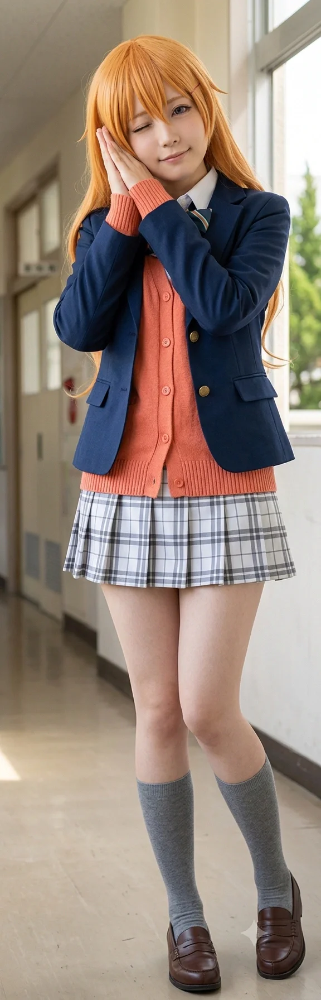

"동생을 구원하려다 스스로 지옥에 갇혔던 K-장녀, 그리고 김시연의 가장 든든한 참모."
효빈대학교 심리학과 재학생이자, 2025학년도 사회과학대학 부학생회장, 그리고 효빈시의 간판 청년 정책인 블루 버드 멘토단의 핵심 대학생 멘토. 차세대 정치 천재 김시연의 절친한 친구이자 학생회 내부의 핵심 참모(겸 수면당번) 역할을 수행하고 있다.
이름부터가 '코노에 카나타'를 완벽히 연상시키듯(코노에 → 고노애 → 고노예...), 뼛속까지 카나타 오시이자 현실에서도 여동생을 끔찍이 아끼는 포지션을 맡고 있다.[1]부모님이 지어주신 본명이 공교롭게도 최애 캐릭터의 성씨(코노에) 발음과 놀랍도록 일치했다. 본인도 운명이라고 생각하는 중. 그러나 따뜻하고 평화로운 애니메이션과 달리, 현실의 고노애는 뇌전증으로 투병 중인 아버지와 지독한 가난, 그리고 극단적으로 엇나간 여동생을 홀로 책임져야 했던 눈물겨운 소년가장(K-장녀)의 굴레를 짊어지고 뼈와 살을 깎는 생지옥을 겪어야 했다.
이후 김시연의 무자비하지만 진심 어린 '얀데레식 물리치료(?) 팩트 폭격' 덕분에 과거의 굴레에서 완벽히 해방되었으며, 현재는 멘탈을 회복하고 자신만의 삶과 정치적 역량(심리 분석)을 마음껏 펼치고 있는 입지전적인 인물이다.
2004년 12월 15일, 덕빈북도 약산시 근강면 건상리에서 태어났다. 공교롭게도 그녀의 생일은 코노에 카나타의 생일(12월 16일)과 단 하루 차이이며, 출생지인 건상리 역시 코노에 카나타의 현실 성지로 유명한 곳이다. 이후 3살 때 가족과 함께 효빈광역시 서구 구도심으로 이주하게 된다.
효빈시에서의 학창 시절은 그야말로 고난과 마굴, 인권 유린의 연속이었다. 집안의 지독한 가난 탓에 교복이나 옷을 제대로 세탁해 입지 못할 때가 많아 값싼 비누 냄새를 풍기고 다녔다. 다행히 아버지의 뇌전증 증세가 대소변을 받아내야 할 정도의 최악의 중증은 아니었지만, 언제 갑자기 발작을 일으키며 쓰러지실지 모른다는 극도의 공포와 긴장감 속에서 매일 새벽같이 일어나 밀린 집안일과 밥을 차리고 등교해야 했기에 학교에 오면 책상에 쓰러지듯 엎드려 꾸벅꾸벅 조는 '잠만보' 신세였다.
이러한 가난과 만성적인 수면 부족, 낡은 행색은 잔인한 10대 일진들의 완벽한 먹잇감이 되기 딱 좋았다. 특히 족포초등학교 시절에는 훗날 박효빈 시장을 괴롭혔던 '이인성 비비탄 테러 사건'이나 '양예원 여왕벌 정치질', '초딩 미적분충의 난' 같은 끔찍한 마굴의 분위기가 팽배해 있었다. 고노애 역시 이 악질적인 무리들의 횡포에 무방비로 노출되어, 자고 있으면 지우개 가루를 뭉쳐 던지거나 예비 범죄자들의 빵셔틀 노릇을 강요받는 등 끔찍한 인권 유린을 당했다.
중학교에 진학해서도 지옥은 이어졌다. 악명 높은 빌런 교사 이지훈은 수업 시간에 피로를 이기지 못해 고개를 떨구는 고노애의 가정환경(야간 가사노동 및 병수발)을 뻔히 알고 있었음에도 불구하고, 분필을 던져 이마를 맞추며 "너네 집 가난한 게 벼슬이냐? 잠은 집에서 쳐 자라"며 반 친구들 앞에서 공개적으로 망신을 주고 차별했다.[2]이 교사는 훗날 동생 고하루가 심각한 학폭을 당해 자살 시도까지 했을 때도 사건을 은폐하며 고노애 자매의 인생을 나락으로 몬 철천지원수이자 쓰레기다. 그럼에도 불구하고, 집에 돌아가면 어린 동생 고하루가 걱정할까 봐 화장실에서 억지로 찬물로 세수를 하고 졸린 눈을 비비며 "언니는 오늘 학교에서 친구들이랑 매점도 가고 재밌게 놀다 왔어"라며 억지웃음을 지어 보이는, 너무나도 처절하고 눈물겨운 K-장녀였다.
놀랍게도 고노애의 이 비참한 학창 시절과 학력 테크트리는, 훗날 당선된 현직 효빈광역시장 박효빈과 소름이 돋을 정도로 완벽하게 일치하는 루트다.
박효빈 시장 역시 구도심의 마굴인 족포초-내성중을 거치며 지독한 왕따와 학폭을 겪었고, 찢어지게 가난한 흙수저 출신에 뇌전증으로 투병 중인 아버지를 모시는 소년가장이었으며, 툭하면 대형 사고를 치고 극도로 속을 썩이는 짐덩어리 친동생(여동생)을 부양하기 위해 뼈가 으스러지게 고생해야 했다.
놀랍게도 학창 시절 지독한 가난 때문에 값싼 인스턴트만 먹어 살이 쪘던 '빈곤형 비만'에서 시작해, 극단적인 다이어트와 식이장애를 거쳐, 결국 헬스(웨이트 트레이닝)를 통해 건강한 몸과 멘탈로 완벽히 갱생한 루트마저 박효빈 시장의 삶의 궤적과 소름 돋게 똑같다.
훗날 박효빈 시장이 모교인 효빈대 사회과학대학에 특강을 왔을 때, 시연의 주선으로 시장과 고노애가 독대하게 되었다. 둘은 마주 앉자마자 서로가 걸어온 생지옥의 썰을 풀기 시작했고, 특히 '속 썩이는 친동생' 이야기에서 완벽한 공감대가 형성되며 결국 참았던 감정이 동시에 폭발해 현직 광역시장과 20대 여대생이 서로를 끌어안고 "너도 나처럼 살았구나 ㅠㅠ"라며 대성통곡을 하는 초유의 눈물바다를 연출했다.
(이때 박효빈 시장이 눈물을 닦으며 "마음 같아서는 당장 내 사비로라도 네 학비와 생활비를 전액 지원해주고 싶을 정도로 안타깝지만, 그건 공직선거법 위반으로 우리 둘 다 큰일 나는 길이니까 참겠다. 대신 그보다 훨씬 더 스케일이 크고 많은 청년들이 한 번에 구제받을 수 있는 방향으로 움직이겠다"고 정색하며 선언했다. 그는 "효빈시 가족돌봄청년(영케어러) 지원 특별 조례를 당장 확대하고, 월드비전 등 대형 복지기관과의 시 차원 연계를 대폭 강화해 널 포함한 사각지대의 청년들을 직접 구제하겠다"라며 합법적이고 영구적인 제도적 구원을 약속했다. 노애는 "시장님의 따뜻한 마음과 확고한 정책만으로도 제 어두웠던 과거가 전부 구원받은 기분입니다"라며 진심으로 감사해했다.)[3]이 독대는 단순한 감성팔이가 아니라, 실질적인 효빈시 복지 정책 변화(영케어러 지원 조례 개정 및 월드비전 연계망 구축)를 이끌어낸 나비효과가 되었다.
마굴 같던 내성중학교를 기적적으로 졸업하고 효빈여자고등학교로 진학하면서 노애의 인생에 드디어 빛이 들기 시작했다. 마침내 질 나쁜 양아치들의 굴레에서 벗어났으며, 이곳에서 평생의 은인이자 든든한 빽(?)이자 합법 얀데레 김시연과 언제나 밥을 챙겨주는 천사표 친구 고소유, 인간 비타민 강하애를 만나며 인생의 거대한 전환점을 맞이하게 된다.
사실 얼굴 자체는 꽤 예쁘장한 편이라 대학 입학 후 소개팅 제의도 자주 들어오고 은근히 관심을 가지는 남학생들도 꽤 있었다. 하지만 쓰리잡에 치여 꾸밀 시간도, 여력도 없어서 늘 후줄근한 후드티나 과잠만 대충 걸치고 다니느라 그 미모가 철저히 봉인되어 있었다.
어릴 적에는 지독한 가난 때문에 값싼 패스트푸드와 인스턴트식품 위주로 배를 채우다 보니 이른바 '빈곤형 비만'을 앓았다. 족포초·내성중 시절 학폭의 표적이 된 이유 중 하나도 이 살집 때문이었다. 이후 독하게 다이어트를 해서 살을 뺐지만, 다시 살이 찌는 것에 대한 극도의 강박과 두려움 때문에 폭식을 하고 토해버리는 식이장애(폭식증)를 남몰래 앓고 있었다. 쓰리잡의 스트레스까지 겹쳐 몸이 서서히 망가져 가던 어느 날, 화장실에서 먹고 토하는 모습을 하필 김시연에게 들키고 만다.
이때 시연은 화를 내거나 동정하는 대신, 눈을 번뜩이며 시연 특유의 얀데레 스위치를 켜고 다가왔다.
"우리 노애, 얼굴도 이렇게 예쁘고 특정 부위(...)도 이렇게나 큰데 굳이 몸 상해가며 그래야 돼? 그럴 거면 차라리 나만 바라봐줘... 내가 책임지고 먹여 살려줄 테니까(...)"
시연이 소름 돋게 치대는(?) 바람에, 노애는 어이가 출타하고 등골이 오싹해져서 그날 이후 기적적으로 구토 강박을 끊어내게 되었다고 한다. 이후 쓰리잡을 그만두며 생긴 여유 시간에 본격적으로 웨이트 트레이닝과 헬스를 시작하며, 카나타와 소름 돋게 똑같은 특정 부위가 굉장히 큰 매력적이고 탄탄한 체형으로 완벽하게 건강을 되찾았다.
단순히 오시인 카나타와 이름만 비슷한 게 아니라, 포근하고 나른한 인상에 언제나 졸려 하는 '잠만보' 기질까지 똑같다.
사실 노애의 본래 성격은 카나타처럼 '폭신폭신하고 나른한 마이페이스'에 가까웠으나, 혹독한 가정 환경과 K-장녀의 굴레 때문에 이 쾌활한 성격이 오랫동안 억눌려 있었다. 툭하면 타인의 눈치를 보고, 억지로 책임을 짊어지려 하며 안절부절못하던 과거와 달리, 김시연의 치료(...) 이후 동생 고하루로부터 완전히 심리적 독립을 이뤄낸 현재는 본래의 '카나타스러운' 여유롭고 엉뚱한 자아를 완벽하게 되찾았다. 이제는 학생회실 제일 푹신한 쇼파에 대자로 누워 "시연쨩~ 노애는 이제 5분만 더 잘래... 일은 부장한테 시켜..."라며 뻔뻔하게 농땡이를 피우는 경지에 이르렀다.
과거 쓰리잡을 뛰면서도 효빈대 심리학과에서 4.3점대의 초고득점 학점을 유지하며 장학금을 쓸어 담은 노애의 비결은 바로 전설의 '코노에 카나타식 실전 압축 수면 학습법'이다.
수업 시간에 맨 뒷자리에 앉아 고개를 푹 숙이고 딥슬립을 하는 것처럼 보이지만, 사실 렘수면(REM) 상태에서 교수의 목소리를 주파수로 인식해 뇌의 해마에 다이렉트로 각인시키는 기적의 메커니즘을 발휘한다.[4]심리학과 동기들은 이를 '무의식 학습의 실전 압축'이라 부르며 경악을 금치 못했다. 의학적으로 증명 불가능한 기행이다. 한 번은 깐깐하기로 소문난 꼰대 전공 교수가 대놓고 자고 있는 노애에게 망신을 주려고 기습 질문을 던졌는데, 노애는 눈을 반쯤 감고 고개가 꺾인 채 나른하고 잠긴 목소리로 전공 서적의 페이지 수와 프로이트의 이론까지 정확히 인용하며 완벽한 정답을 읊어내어 교수를 데꿀멍하게 만들었다. 필기 역시 눈을 감고 펜을 끄적이는데, 글씨체가 조금 삐뚤어질 뿐 기승전결이 완벽하게 정리된 노트 필기가 완성된다고 한다.
시연 패거리 그룹 내에서 오사카 시즈쿠 오시인 단아한 오이슬(연극부 출신)과의 관계가 매우 각별하다. 팬덤에서 유명한 '시즈카나(ShizuKana)' 커플링의 현실판 산증인이다. 과거 노애가 알바에 찌들어 학생회실이나 휴게실 구석에서 쓰러지듯 새우잠을 자고 있으면, 오이슬이 다가와 조용히 자신의 허벅지를 내어주어 푹신한 무릎베개를 해주거나 담요를 덮어주곤 했다. 시즈쿠가 칠칠치 못한 카나타를 살뜰히 챙기는 훈훈한 원작의 모습을 현실에서 완벽히 재현하는 중이며, 노애 역시 잠결에 오이슬의 품으로 파고들며 "헤헤... 이슬쨩 냄새 좋다... 폭신폭신해..."라며 대놓고 치대는 바람에 오이슬을 자주 얼굴 붉히며 당황하게 만든다.[5]오이슬은 겉으로는 헛기침을 하며 점잖은 척하지만, 속으로는 노애의 이 무방비한 스킨십을 매우 즐기며 은근히 독점욕을 불태우고 있다는 후문이다.
노애가 동생 고하루에게 묘한 짜증(?)을 느끼기 시작한 계기 중 하나는 바로 카나타의 애니메이션 동생 '코노에 하루카'와의 극단적인 2D vs 3D 스펙 격차 때문이었다.
애니메이션 속 하루카는 언니 카나타를 끔찍이 위하고, 매일 언니를 위해 맛있는 요리를 해주는 천사 그 자체다. 어느 날, 알바를 마치고 돌아온 노애가 카나타와 하루카가 다정하게 안고 있는 굿즈를 흐뭇하게 바라보다가, 문득 방바닥에 대자로 널브러져서 "아 언니 마라탕 좀 시켜줘!! 내 카드로 결제해놓을 테니까 언니가 먼저 긁어!!"라며 징징대는 현실 동생 고하루를 쳐다보았다.
순간 밀려오는 현타를 참지 못한 노애가 무심코 한숨을 푹 쉬며 중얼거렸다. "하아... 우리 하루는 대체 왜 하루카쨩 발끝만치도 못 따라갈까... 2D 동생은 천사인데 3D 동생은 왜 이 모양인지... 환불 안 되나"
이 말을 귀신같이 주워들은 고하루는 극대노했다. "뭐 씨발?! 야!! 그럼 평생 그 잘난 2D 캐릭터 하루카인가 뭔가랑 평생 껴안고 살든가!! 나한테 말 걸지 마!!"라며 방에 들어가 문을 쾅 닫고 3일 동안 단식투쟁(?) 겸 언니를 향한 묵언 수행을 벌이는 대참사가 일어났다. 결국 쫄보가 된 노애가 방문 밖에서 마라탕 특대를 바치며 싹싹 빌어야 했다.
친구 그룹 내 공공학과 에이스이자 유키 세츠나 오시인 유채나와의 관계는 '실질적인 행정 해결사와 수혜자'의 관계다. 정보 처리가 느리고 마음이 여려 복잡한 행정 서류를 보면 잠부터 쏟아지는 노애를 대신해, 채나가 놓치기 쉬운 국가장학금, 투병 중인 가족 복지 지원금 서류, 근로장학 행정 절차 등을 완벽하게 깔끔히 정리해서 파일철로 쥐여주는 든든한 보호자 역할을 해준다. 노애는 "채나쨩 없었으면 나는 교내 행정실에서 길 잃고 미아 돼서 굶어 죽었을 거야 ㅠㅠ"라며 진심으로 고마워한다.
또한, 노애는 학생회실 쇼파에 누워 자는 척하면서 유채나와 김시연이 고소유를 두고 벌이는 치열한 '정실 대전'을 관찰하며 심리학적으로 프로파일링하는 것을 즐긴다. 속으로 '음... 저건 애착 불안과 소유욕의 충돌이네... 드르렁...'이라며 관망하다가, 채나가 안경을 집어 던지며 폭주할 때쯤 나른하게 일어나 "시연쨩, 채나쨩 싸우지 마~"라며 중재를 돕기도 한다.
대학에 입학하자마자 청춘을 즐기거나 미팅을 할 새도 없이, 아버지의 병원비와 동생의 학원비를 대기 위해 마트 푸드코트 알바, 교내 편의점 야간 알바, 지역 아동센터 멘토링 근로장학까지 그야말로 피 말리는 쓰리잡을 뛰며 뼈와 살을 갉아먹었다. 작중 카나타도 장학금을 받기 위해 열심히 살지만, 현실의 고노애는 이름 그대로 '고노예(...)'처럼 치열하게 생존해야 했던, 어깨가 너무나도 무거운 20대 청춘이었다.
특히 2023년 1학년 당시 그녀의 핵심 수입원 중 하나는 '대학생 청소년 교육지원 사업(국가 근로장학)'이었다. 하지만 2023년 어느 날, 평화롭던 사회과학대학 학생회실에 무거운 정적이 내려앉았다. 평소라면 구석에서 졸고 있어야 할 노애가 스마트폰 화면을 뚫어져라 쳐다보며 어깨를 잘게 떨고 있었다. 그녀가 본 것은 윤석열 정부가 '사업 통합'이라는 말도 안 되는 핑계로 국가 근로 시급을 12,500원(2022년 기준)에서 11,150원으로 무참히 깎아버렸다는 폭거(...)의 공지였다.
삭감된 시급 1,350원에 1년 최대 근로 시간인 600시간을 곱하면, 고노애가 잃어버린 연간 총수입은 810,000원이다. 떨리는 손으로 앱을 두드리던 고노애의 화면에 이 숫자가 뜬 순간, 단돈 천 원 한 장이 아쉬워 피를 토하던 소년가장에게 이것은 한 달 생활비의 근간이 날아가는 사형 선고나 다름없었다. 81만 원. 투병 중인 아버지의 몇 달 치 약값이자, 동생 고하루의 생활비, 그리고 자신이 푸드코트에서 굶주리며 아꼈던 식비를 전부 합친 것과 맞먹는 거대한 생존의 무게였다.
평소 화 한 번 낸 적 없고 욕설의 'ㅇ'자도 모르던 순둥이 고노애는, 눈동자의 초점을 잃고 분노의 피눈물을 뚝뚝 흘리더니 이내 학생회실 창문을 깨부술 듯한 처절하고 짐승 같은 사자후를 토해냈다.
"윤석열 이 개새끼야!!!!!!!!!!"
이 끔찍한 절규를 들은 동기들은 "노애가 저렇게 쌍욕을 할 정도면 진짜 나라가 쳐망한 거다"라며 전원 얼어붙어 숙연해졌다. 오열하며 "81만 원... 내 81만 원..."을 부르짖는 노애를 향해 가장 먼저 달려간 고소유가 무릎을 꿇고 으스러져라 끌어안고 위로했다.
그 너머에 서 있던 김시연의 눈동자에서는 이성의 하이라이트가 완벽히 꺼져버렸다. 시연은 '죽은 눈'으로 돌변해 바닥에 널브러진 노애를 푹신한 쇼파에 눕히고 담요를 덮어주며 다정하게 속삭였다. "우리 노애가 뼈를 갈아서 번 피 같은 돈을... 저 개새끼들이 증발시켰다 이거지. 내가 이 나라 정권, 기필코 내 손으로 찢어버린다." 직후 시연은 차세대 정치 괴물로 각성하여 정부 규탄 결의안을 작성하고 피비린내 나는 정치적 보복을 지시했다. 평소 아재개그를 던지던 강하애 역시 정색하며 "이건 단순한 예산 삭감이 아니야. 취약계층 청년들의 생명줄을 쥐고 흔드는 명백한 국가 폭력이지"라며 차가운 논리로 국가의 만행을 해부했다.
퇴근길, 밤바람을 맞으며 터덜터덜 걸어가던 노애의 입술 사이로 처절한 욕설이 새어 나왔다. 그녀는 무너지지 않기 위해 카카오톡 듀얼 프로필에 눈물겨운 생존형 정신승리 짤을 올렸다. [사진 1]은 대통령의 쇠빠따에 머리를 맞고 우는 노애, [사진 2]는 피눈물을 쏟으면서도 거대한 '장난감 뿅망치'를 들고 역공을 날리는 조잡한 합성 짤이었다. 이 짠내 나는 합성 짤은 친구들의 완벽한 기폭제가 되었다. 훗날 2026년 어느 봄날, 노애는 친구들에게 "뿅망치 짤 만들면서... 속으로는 진짜 피눈물 흘리면서 엉엉 울고 있었거든... 나랑 같이 그 무거운 뿅망치 들어줘서... 정말 고마워."라며 눈물겨운 우정에 대한 묵직한 고백을 남겼다.
동생 고하루는 중학교 2학년 시절 내성중학교에서 역대급 가해자인 조창현 일당에게 지독한 왕따와 언어폭력을 당해 결국 극단적 선택 시도(자살 기도)까지 감행하여 정신과 폐쇄병동에 입원하는 참사가 발생했다. 당시 담임이었던 막장 교사 이지훈은 사건을 완벽하게 은폐하고 조창현에게 면죄부를 주며 피해자인 하루를 방관했다.
이 사실을 뒤늦게 응급실에서 전해 들은 고노애의 가슴은 형체도 없이 무너져 내렸다. "내가 알바하느라 바빠서, 돈 번다고 매일 꾸벅꾸벅 조느라... 내 하나뿐인 동생이 그 지옥 속에서 비명을 지르며 죽어가는 걸 몰랐다. 내가 언니로서 동생을 지키지 못했다."는 처절하고도 왜곡된 구원자 콤플렉스가 그녀의 영혼을 깊숙이 갉아먹었다.[6]심리학 용어로, 타인의 고통이나 불행을 전적으로 자신의 책임으로 돌리며 맹목적으로 자신을 희생하여 구원하려는 병적인 심리 상태를 뜻한다. 이 끔찍한 죄책감은 하루가 세상을 향해 삐뚤어지고 언니의 피를 빨아먹으며 착취하기 시작했을 때, 노애가 그 모든 패악질을 묵묵히 받아내며 스스로를 '호구 겸 감정 쓰레기통'으로 전락시키는 완벽한 가스라이팅의 토대가 되고 말았다.
이후 노애가 피 땀 흘려 번 돈으로 동생을 기적적으로 중촌대학교 음악과에 진학시켰지만, 하루는 "알파벳과 숫자는 쳐다보기도 싫다"며 필수 교양 과목을 모조리 던져버리고 2.25 ~ 2.65라는 전설의 심해 학점을 기록했다. 늦게 일어나면 뻔뻔하게 언니의 신용카드로 택시를 탔고, '기초생활수급자' 버프로 운 좋게 얻어걸린 교내 도서관 근로장학마저 수시로 땡땡이를 쳤다.
하루는 고노애가 쓰리잡으로 피를 토하며 벌어온 돈 200만 원 중 용돈으로 무려 90만 원을 뜯어갔고, 수시로 "돈 안 주면 나 내일부터 학교 안 간다, 공부도 안 할 거야, 그냥 다 포기하고 콱 죽어버릴까?"라며 극단적인 정서적 인질극을 벌였다. 심리학을 전공하는 노애조차 십수 년간 누적된 '부모화(Parentification)'의 덫에 걸려 극도의 불안장애와 공황장애를 앓으며 철저한 착취를 당하고 있었다.
[당시 고하루와 고노애의 소름 돋는 실제 문자 대화 내역 발췌]
고하루: 나 얼마 남음
고노애: 2만 9천원
고노애: 하루야 그리고 나 이제 바쁘니까 이제부터 너가 좀 계산할수 있을까?
고하루: 애초에 언니가 씨발 니 걸로 해 놓는다고 그래서 내가 못 보는
고하루: 그걸로 언니가 지랄을 하면 난 뭐라고 해 줘야 함
고노애: 알겠어...
고하루: 씨발 니가 돈 더 줄 거 아니라며. 그러니까 정확하게 하려고 이러잖아.
고노애: 알겠어
고하루: 진짜 개빡치게

2024년 윤석열 정부의 대청교 시급 삭감 폭거 직후 확장 개편된 블루 버드 멘토단에 합류하면서, 고노애는 무지개 동호회 외부의 언니·동생들과도 끈끈하고 입체적인 가족 같은 인연을 맺게 되었다. 특히 멘토단 내에서 노애는 ‘최고참 대학생 멘토 언니이자, 코노에 카나타 특유의 포근함으로 동생들을 재우고 치유해 주는 인간 수면제’로 통한다.
절친 나수미의 8살 터울 친언니이자 박효빈 시장의 96년생 소꿉친구인 나수민 셰프와 고노애의 관계는 눈물 없이는 볼 수 없는 ‘족포초 학폭 피해 생존자 & K-장녀 연대’다.
나수민은 노애가 자기 동생 수미의 단짝 친구라는 점에서도 예뻐하지만, 무엇보다 노애가 자신과 박효빈이 다녔던 그 끔찍한 마굴 족포초등학교 후배이면서 뇌전증 아버지와 철없는 동생을 부양하느라 쓰리잡과 섭식장애로 쓰러져갔다는 사연을 박효빈 시장에게 전해 듣고 그 자리에서 앞치마로 눈물을 훔쳤다. 수민 역시 어린 시절 아버지의 추락 산재 사고로 당선동 단칸방에서 소녀가장 노릇을 했던 아픔이 있었기에 노애를 남 일처럼 볼 수 없었던 것이다.
이 때문에 동생 나수미가 노애에게 아몬드 가루 키토 빵을 구워다 준다면, 언니 나수민은 블루 버드 멘토단 합동 교육 날마다 ‘원조 수밍표 한우 사골 들깨수제비’, ‘전복 삼계 리조또’, ‘카나타풍 수제 롤케이크’를 3단 보온 도시락에 꽉꽉 채워 와서 졸고 있는 노애의 입에 직접 떠먹여 준다!
[나수민]: "야, 고노애! 내 동생(수미)이 구워주는 마른 빵쪼가리만 먹으니까 네가 기운이 없어서 맨날 자는 거 아니야! 이 언니가 오늘 새벽 4시부터 고송동 레스토랑에서 한우 사골 우렸다. 한 방울도 남기지 말고 다 마셔! 그리고 너네 동생 고하루 그 기집애 또 너한테 돈 달라고 깝치면 나한테 바로 전화해. 내 40cm 중식도 들고 중촌대 음악과로 찾아가서 기강 확 잡아버릴 테니까!"
[고노애]: (수민의 따뜻한 들깨수제비를 받아먹으며 눈을 반쯤 감은 채 행복하게 골골댄다) "수민 언니이... 수미쨩이랑 똑같이 생겼는데 밥은 훨씬 더 따뜻해애... 언니 식당 소파에서 10분만 자도 돼요오...? 드르렁..."
동생 수미가 이 광경을 목격하면 "야 나수민!! 내 친구 노애한테 왜 네가 언니 노릇을 해?! 노애는 내 빵만 먹을 거거든?!"이라며 자매간 ‘고노애 사육권 쟁탈전’이 벌어지는데, 정작 노애는 자매가 싸우는 소리를 자장가 삼아 양손에 수민의 수제비 숟가락과 수미의 바게트를 쥐고 평화롭게 숙면을 취한다.
블루 버드 멘토단 내 대학생 멘토 중 노애와 가장 영혼의 주파수가 완벽하게 일치하는 2년 후배 동생이다. 다섯 살에 부모님을 산사태로 잃고 14살 터울 언니(안여왕)의 희생 속에 자란 안공주는, K-장녀로서 동생을 위해 청춘을 갈아 넣었던 고노애를 보며 자신의 친언니를 떠올리고 진심으로 존경하며 따른다.
특히 두 사람이 함께 있으면 시청 사무실의 시간 흐름 자체가 0.5배속으로 느려지는 기현상이 발생한다! 코노에 카나타 특유의 나른하고 포근한 말투를 쓰는 고노애와, 안요지 히메 특유의 느긋하고 몽글몽글하게 녹아내리는 마시멜로 보이스를 지닌 안공주가 시청 휴게실 3인용 소파 양 끝에 폭신하게 파묻혀 대화를 나누기 때문이다.
[안공주]: "으응~ 노애 언니이~ 오늘 심리상담 일지 엑셀 정리할 거 많지이~? 언니 졸리면 공주 후드티 베고 코오 자고 있어어~ 공주가 파이썬 매크로 돌려서 10분 만에 다 분류해 놓을게에~ 헤헤..."
[고노애]: "우웅... 공주쨩 목소리 들으니까 마시멜로 이불 덮은 것처럼 잠이 솔솔 와아... 대신 공주쨩, 어제 버튜버 방송에서 루리메구 주접 떨다가 목 살짝 쉬었지이...? 여기 노애가 챙겨온 따뜻한 캐모마일 허브티 마시면서 해애... 쿨쿨..."
공주는 노애가 컴퓨터 행정 작업에 약한 것을 알고 늘 먼저 나서서 IT 매크로로 노애의 업무량을 1/10로 줄여주고, 노애는 공주가 게임 연습과 알바로 누적된 피로를 풀 수 있도록 심리학적 아로마 테라피와 수면 안대를 챙겨주며 서로를 말랑말랑하게 보듬어주는 ‘시청 최고의 힐링 듀오’다.
극우 사이비 교주 친부 조광훈의 끔찍한 가정폭력과 강제 매매혼 위기에서 탈출해 멘토단에 합류한 조유진은, 사실 고노애의 모교인 효빈여자고등학교 2년 직속 후배다.
유진이 처음 가문을 탈출해 시청 사회복지과 대학생 멘토로 배치되었을 때, 유진은 밤마다 불을 끄면 조광훈이 자신을 가두었던 어두운 지하실 ‘회개방’의 기억이 떠올라 극심한 외상후 스트레스 장애(PTSD)성 불면증과 야경증에 시달리고 있었다.
이를 단번에 알아차린 심리학과 에이스이자 수면 전문가 고노애는, 유진을 자신의 자취방과 시청 심리상담 센터 수면실로 데려가 ‘코노에 카나타식 맞춤형 수면 심리 치료’를 개시했다.
노애는 어둠을 무서워하는 유진을 위해 방 천장에 은하수 별자리 무드등(유진의 최애 타카마츠 토모리가 좋아하는 플라네타륨 조명)을 켜주고, 자신이 가장 아끼는 폭신폭신한 카나타 양털 베개와 라벤더 향 인형을 유진의 품에 안겨주었다.
[고노애]: (유진의 손목에 붙은 귀여운 반창고를 부드럽게 쓰다듬으며 자장가 같은 목소리로 속삭인다) "유진아아... 여기는 지하실이 아니라 별빛이 쏟아지는 안전한 방이야... 문밖에는 세하 언니랑 시연이, 그리고 나랑 공주가 지키고 있으니까 아무도 못 들어와... 언니가 손잡아 줄 테니까, 아무 생각 말고 양 세 마리만 세면서 자자... 하나아... 두울... 드르렁..."
상담해 주던 노애가 먼저 3초 만에 평화롭게 골아떨어지며 규칙적인 숨소리를 내자(...), 극도로 긴장해 있던 유진의 교감신경마저 노애의 그 무방비하고 포근한 수면 파동에 동조되어 가출 이후 처음으로 악몽 없이 10시간 연속 숙면을 취하는 기적이 일어났다! 현재 유진은 노애를 "내 불면증을 고쳐준 생명의 은인이자 세상에서 제일 포근한 효빈여고 선배님"이라며 친언니처럼 따르고 있다.
고노애와 한 살 언니인 이리자 간호사의 인연은 블루 버드 멘토단에서 만나기 이전인 2024년 노애의 ‘길거리 과로 및 탈수 실신 사건’과 ‘경찰서 심인성 쇼크 혼절 사건’ 때부터 시작되었다!
당시 구급차에 실려 안천병원 응급실로 이송되어 온 노애의 팔에 영양 수액 라인을 잡고 바이탈을 체크하며 밤새 간호해 준 담당 간호사가 바로 이리자였던 것이다. 당시 노애가 잠결에 "안 돼... 지아센 알바 가야 해... 시급 깎여..."라며 링거 줄을 뽑으려 발버둥 치자, 이리자가 사쿠라우치 리코 특유의 차분하고 청아한 목소리로 "고노애 환자분, 지금 일어나시면 저한테 쾌감펀치 맞고 강제 진정제 투여되십니다. 김시연 학생회장님이 병원비 다 결제해 두셨으니까 아무 걱정 말고 주무세요"라며 단호하고도 다정하게 노애를 침대에 눕혔다.
이후 블루 버드 멘토단에서 ‘선배 대학생 멘토 출신 초빙 강사(이리자)’와 ‘후배 대학생 멘토(고노애)’로 재회하자, 이리자는 노애의 건강해진 모습과 통통하게 오른 볼살을 보며 누구보다 기뻐했다. 지금도 노애가 시험 기간이나 학생회 업무로 조금이라도 안색이 피곤해 보이면, 이리자는 안천병원 VIP 수액실의 가장 푹신한 리클라이너 베드를 비워두고 노애를 불러 고농축 비타민 수액을 놔주며 합법적인 2시간 낮잠을 재워주는 든든한 의료 수호천사다.
블루 버드 멘토단의 03년생 초빙 강사 투톱인 최후영과 오동령에게 고노애는 ‘가장 손이 많이 가면서도 미워할 수 없는 말랑말랑한 여동생’이다.
• 최후영과의 관계: 후영이 열정적으로 스피치 및 발성 강의를 할 때 맨 앞줄에서 노애가 고개를 꾸벅이며 졸고 있으면, 처음엔 후영도 당황했으나 노애가 ‘렘수면 학습법’으로 강의 내용을 토씨 하나 안 틀리고 다 외운다는 것을 알고 경악했다. 오히려 노애가 "후영 언니의 원래 목소리(쵸후 노리코 톤)는 주파수가 너무 포근해서 최고급 ASMR 수면 유도제 같아요..."라고 극찬하자, 푸딩 하나로 매수된 후영은 아예 노애를 위해 ‘고노애 전용 30분 딥슬립 자장가 보이스 파일’을 직접 녹음해 선물해 주었다.
• 오동령과의 관계: 과거 ‘빈곤형 비만 → 섭식장애(폭식증) → 웨이트 트레이닝을 통한 건강 회복’이라는 서사를 거친 노애에게, 인간 덤벨 오동령은 최고의 전담 헬스 코치다! 다만 동령의 텐션이 너무 높아서 멘토단 체육 시간에 노애가 요가 매트 위에서 플랭크 자세를 유지한 채 그대로 렘수면에 빠져 코를 골아버리는 기행을 선보이자, 동령은 "야 고노애!! 복근에 힘주면서 자는 인간은 내 평생 처음 본다!! 코어 근육은 합격이니까 일어나서 스쿼트 10개만 더 해!!"라며 혀를 내둘렀다. 재진숙 당협위원장 난입 사태 때는 동령의 광배근 물리 팩폭 직후 노애가 소파에서 심리학 방어기제 팩폭을 날리는 환상의 ‘문무(文武) 합작 콤보’를 작렬시켰다.
리에라몰의 장녀이자 80만 유튜버인 임은혜와는 김시연의 소개와 블루 버드 멘토단 특강을 통해 친해진 사이다. 은혜는 과거 노애가 조창렬·안농운 성범죄 사태로 고통받을 때 시연 사단의 후방 자금줄 및 여론전 화력 지원군으로 도왔던 의리파 동생이다.
특히 두 사람은 효빈시 인터넷 방송 역사에 길이 남을 ‘무소음·코골이 합동 수면 방송’의 주역이다! 어느 날 은혜가 멘토단 홍보 겸 자신의 스튜디오에 노애와 안공주를 초대해 심야 라디오 방송을 진행했는데, 새벽 1시가 넘어가자 수면 프로파일러 노애가 먼저 스튜디오 빈백 소파에 파묻혀 새근새근 잠들었고, 노애의 강력한 수면 전염파에 휩쓸린 임은혜마저 5분 뒤 옆에서 입을 벌리고 드르렁 코를 골며 잠들어버린 것이다!(...)
홀로 깨어 있던 안공주가 카메라 각도를 조절해 두 사람이 자는 모습만 띄워놓고 퇴근해 버렸는데, 시청자들이 "와, 왼쪽 보라색 카나타 언니(고노애) 자는 얼굴 진짜 선녀 같다", "오른쪽 메구미(임은혜)는 코 고는 소리도 큥큥거리네 ㅋㅋㅋ"라며 도네이션을 폭격해 무려 자면서 300만 원의 후원금을 쓸어 담는 기적을 창조했다. 은혜는 다음 날 일어나 정산금을 절반 뚝 떼어 노애에게 최고급 구스다운 수면 베개 세트를 선물하며 영혼의 수면 동맹을 맺었다.
노애가 소속된 사회과학대학 학생회(회장 김시연)와 연합을 맺은 총학생회장단(고다솔, 천애음), 그리고 이들의 본진인 인디 밴드 『미아(MyGO!!!!!)』 멤버들과도 학내외를 오가며 매우 특별하고 나른한(?) 관계망을 구축하고 있다. 이들 조합은 각 그룹의 '엄마 포지션'이나 '수면 장애' 코드로 기막히게 얽혀 들어간다.